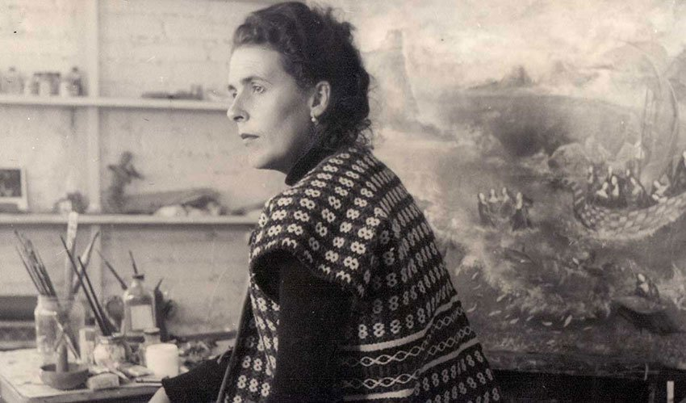

Leonora Carrington
1917-2011
Surrealist artist and novelist

Leonora Carrington in her studio
Biography
Leonora Carrington OBE (6 April 1917- 25 May 2011) was a British-born Mexican artist, surrealist painter, and novelist. Her work featured magic, mythology and alchemy. She lived most of her adult life in Mexico city and was one of the last surviving participants in the Surrealist movement of the 1930s. Carrington was also a founding member of the women's liberation movement in Mexico during the 1970s.

Amor che move il Sole et l'altre Stelle, 1946